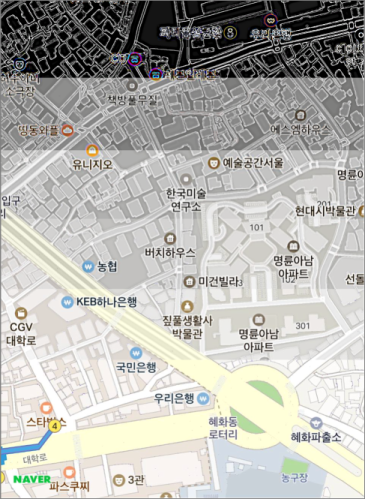
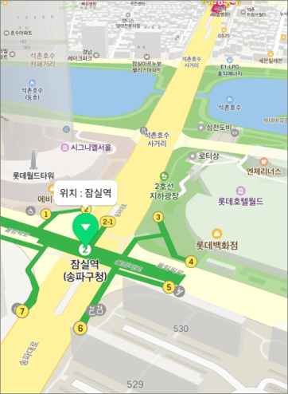
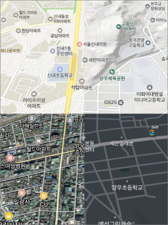
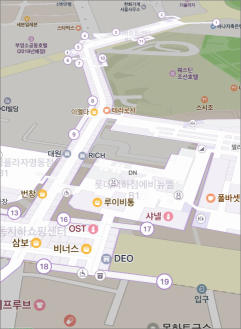
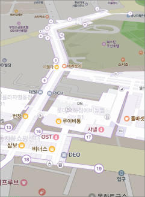
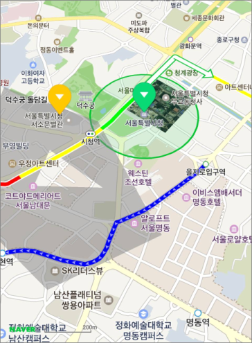

Introduction
NAVER Maps SDK (hereinafter, “the SDK”) is a map engine that is being used by various NAVER services including NAVER Map application. Being adopted by large services for more than a year, the SDK guarantees useful features and stability. It also provides developer-friendly APIs, allowing you to easily use its powerful features.
Powerful features
The SDK provides powerful features accommodating a variety of requirements of a complicated service like NAVER Maps.
Full vector rendering
The SDK supports full vector rendering, so maps can be enlarged with no deterioration in image quality. Even if a map is tilted or rotated, its symbols are rendered toward the front so that they do not overlap. The SDK also allows you to dynamically change properties displayed on the screen.
 
Map types and layers
The SDK provides five background map types: basic, satellite, hybrid, terrain, and navigation maps. It also provides six layer groups that can be displayed on background maps: building, live traffic, transit, bicycle, trail, and cadastral layers. Moreover, it provides built-in indoor map features as well as night mode for navigation maps.
  

Overlays
The SDK provides widely used overlays such as marker, info window, ground, and shape overlays, as well as more specialized overlays such as location, path, and arrow overlays. Markers especially provide more powerful features, such as caption, subcaption and overlap control.

Natural gestures
The SDK supports natural gestures following movements of fingers that manipulate maps. Besides basic gestures including scroll and pinch, it provides various convenient gestures such as double tap, two-finger tap and one-finger zoom. Every gesture is accompanied with fine-tuned inertia effects, which you can adjust yourself.
Powerful event system
Symbols as well as overlays and maps are tappable and can receive an event. The SDK supports more advanced event propagation system, which enables an element covered by another element for which no event handler is added, to receive an event; if the event is not consumed, it is propagated to the map.
Easy development
With the SDK’s developer-friendly and intuitive APIs, you can easily develop apps.
Compatible with Swift
As all the APIs are provided with nullable annotations, and properties are consistently named, the SDK is well compatible with Swift.
Modern APIs
Adopting the modern API paradigm including immutable objects and enumeration, the SDK provides simple and intuitive code.
let cameraUpdate = NMFCameraUpdate(scrollTo: NMGLatLng(lat: 37.5666102, lng: 126.9783881))
cameraUpdate.reason = 3
cameraUpdate.animation = .fly
cameraUpdate.animationDuration = 2
naverMap.moveCamera(cameraUpdate, completion: { (isCancelled) in
if isCancelled {
print("Camera movement failed")
} else {
print("Camera movement succeeded")
}
})
Swift
let cameraUpdate = NMFCameraUpdate(scrollTo: NMGLatLng(lat: 37.5666102, lng: 126.9783881))
cameraUpdate.reason = 3
cameraUpdate.animation = .fly
cameraUpdate.animationDuration = 2
naverMap.moveCamera(cameraUpdate, completion: { (isCancelled) in
if isCancelled {
print("Camera movement failed")
} else {
print("Camera movement succeeded")
}
})
Objective-C
NMFCameraUpdate *cameraUpdate = [NMFCameraUpdate cameraUpdateWithScrollTo:NMGLatLngMake(37.5666102, 126.9783881)];
cameraUpdate.reason = 3;
cameraUpdate.animation = NMFCameraUpdateAnimationFly;
cameraUpdate.animationDuration = 2;
[naverMap moveCamera:update completion:^(bool isCancelled) {
if (isCancelled) {
NSLog(@"Camera movement failed");
} else {
NSLog(@"Camera movement succeeded");
}
}];
Intuitive APIs
The intuitive API structure helps you create an object if you need one, or add an event handler to the object if you need to deal with an event.
let marker = NMFMarker(position: NMGLatLng(lat: 37.5670135, lng: 126.9783740))
marker.touchHandler = { (overlay) in
print("Marker is clicked")
return true
}
marker.mapView = naverMap;
Swift
let marker = NMFMarker(position: NMGLatLng(lat: 37.5670135, lng: 126.9783740))
marker.touchHandler = { (overlay) in
print("Marker is clicked")
return true
}
marker.mapView = naverMap;
Objective-C
NMFMarker marker = [NMFMarker markerWithPosition:NMGLatLngMake(37.5670135, 126.9783740)];
marker.touchHandler = ^BOOL(NMFOverlay *overlay) {
NSLog(@"Marker is clicked");
return YES;
};
marker.mapView = naverMap;
Quality documentation and demo apps
Developer’s guide, API reference and demo apps are provided to help you use the SDK more easily.